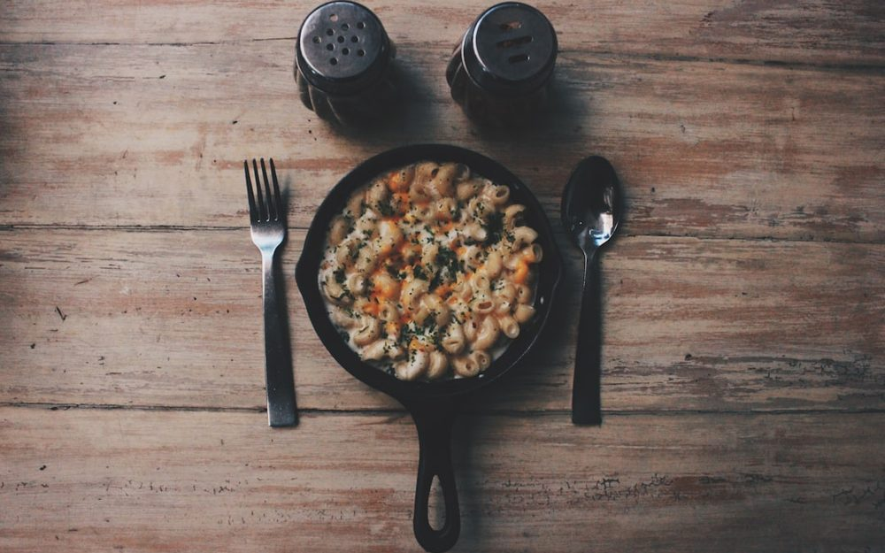

How Automation Is Changing Reputation Management for Restaurants
If you've ever lost a customer because of a three-month-old bad review that never got a response, you already know how much your restaurant's online reputation matters.
Read the Article